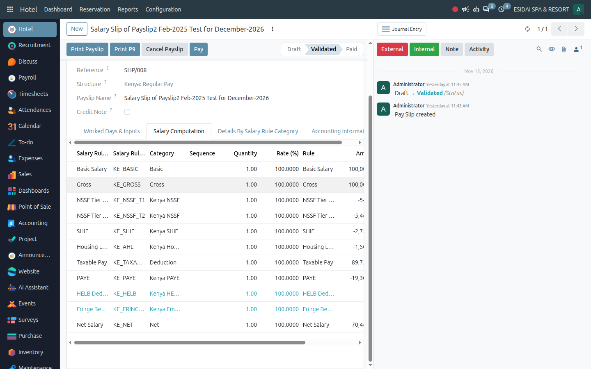
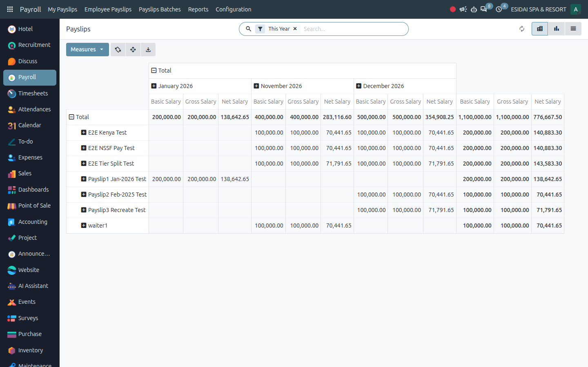
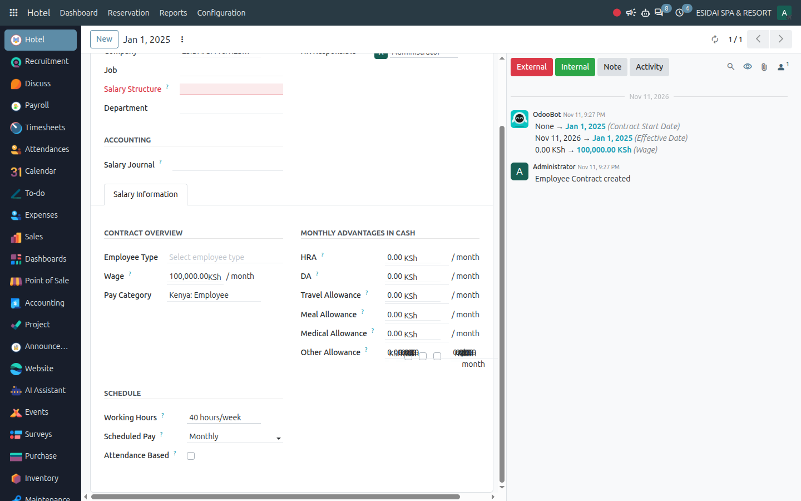
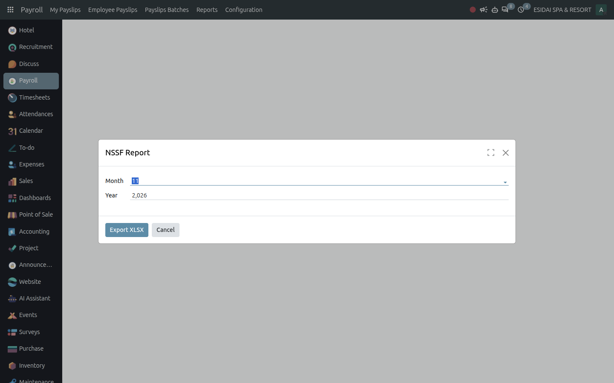
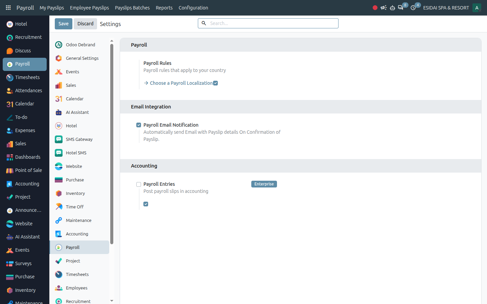
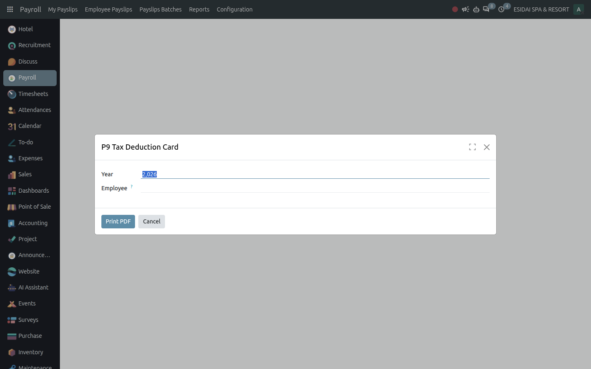
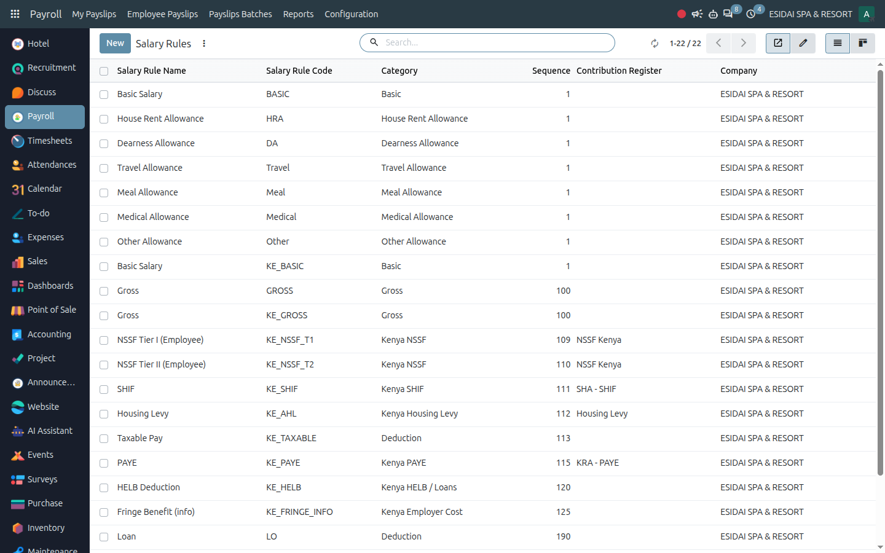

Community Edition
Full Kenyan statutory payroll inside Odoo Community: PAYE, NSSF Tier I/II, SHIF, Affordable Housing Levy and HELB computed on every slip, with NSSF, SHIF, AHL, P9 and P10 returns one click away.
Basic to Gross to NSSF, SHIF, AHL, taxable pay, PAYE and Net — evaluated in sequence order on the Kenya Regular and Bonus structures.
PAYE bands, NSSF limits, SHIF rates, reliefs and caps live in dated rule parameters. New legal years take effect by adding rows.
NSSF, SHIF and AHL schedules, P9 tax cards, the P10 Sheet B import CSV and a KE-aware Payslip Analysis pivot.
Every slip runs the Kenya chain — Basic, Gross, NSSF Tier I/II, SHIF, AHL, PAYE and Net — and prints without the KE_ engine prefix.

The pivot maps KE_BASIC, KE_GROSS and KE_NET into the Basic / Gross / Net measures — no more all-zero reports.

KRA PIN, NSSF and SHIF numbers, pension, mortgage and post-retirement medical deductions, insurance premiums, HELB, disability, secondary-employer and non-resident flags.

Pick the month and export the XLSX: ID number, NSSF number, Tier I, Tier II and totals — paid slips included.

Payroll Settings carries a Kenya Payroll toggle, and the module sits in the Accounting / Localization category so the Choose-a-Payroll-Localization list finds it.

Per-employee yearly gross, NSSF, SHIF, AHL and PAYE — summary card plus a detailed individual card per employee.

Basic, Gross, NSSF Tier I/II, SHIF, Housing Levy, Taxable, PAYE, reliefs, HELB and Net — sequenced, categorized and registered for the statutory extracts.

Graduated monthly bands, personal relief, 15% insurance relief capped monthly, certified-disability exemption, secondary-employer and non-resident handling.
6% to the Lower Earnings Limit plus 6% of the band above it, with dated LEL/UEL history and legacy single-line fallback on old slips.
2.75% of gross with the 300 floor for SHA, 1.5% housing levy — both as contribution registers feeding the statutory schedules.
Fixed HELB deductions, informational fringe-benefit lines, and a Bonus structure that runs the tax chain only.
Yearly P9 tax deduction cards (summary and per-employee detail) plus the monthly P10 Sheet B import CSV for KRA iTax.
Pair with the KE payroll-account module to post each rule to its KRA/NSSF/SHA/expense account with partner-aware move lines.
Secondary-employer contracts skip reliefs, non-residents lose deductions and reliefs, certified disability exempts the first slice — all driven by contract flags.
Paid slips are final payroll records and appear in every extract; pre-split slips with the legacy single NSSF line still total correctly.
Printed reports drop the KE_ engine prefix automatically; a Kenya toggle lives in Payroll Settings and the module sits in the payroll-localization Apps list.